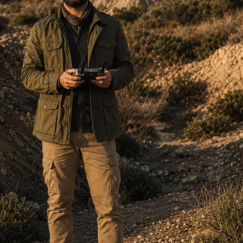
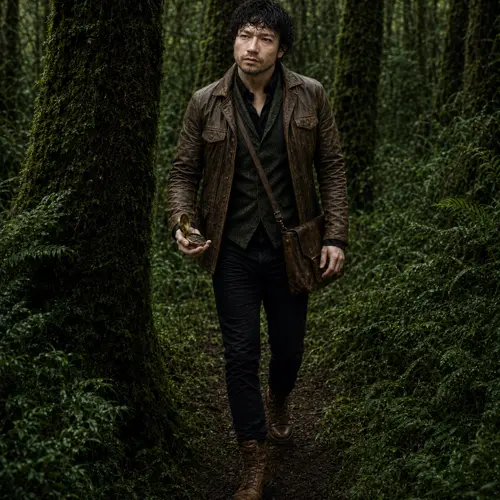
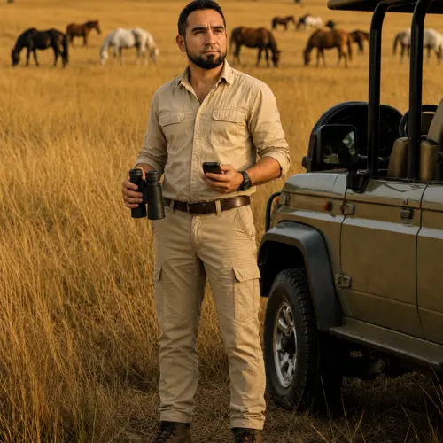

0
Proyectos ejecutados
Consultoría Forestal de Precisión: diagnóstico, planificación y soporte técnico-regulatorio ambiental, forestal y territorial.
Brindamos servicios forestales para proyectos inmobiliarios y energéticos. Nos especializamos en la gestión forestal de proyectos inmobiliarios, energéticos y de infraestructura, aportando el componente ambiental y forestal que cada uno requiere.
Priorizamos servicios de alto valor técnico, baja carga logística y ejecución precisa, siempre con entregables claros y defendibles.
Nuestro equipo combina formación en ingeniería forestal, ciencias ambientales y sistemas de información geográfica, con experiencia directa en tramitación sectorial, elaboración de planes de manejo y ejecución de proyectos de reforestación y restauración ecológica.
Ayudar a personas, empresas e instituciones a entender, ordenar y resolver problemas ambientales, forestales y territoriales mediante análisis técnico, criterio regulatorio y soluciones aplicables.
Consolidarnos como una consultora técnica confiable y especializada, reconocida por integrar experiencia de terreno, análisis cartográfico y criterio regulatorio para abordar problemas ambientales y territoriales de manera clara, eficiente y técnicamente defendible.
Nuestra identidad visual nace de elementos del entorno geográfico y tecnológico.
Diagnóstico tecnológico, sistemas de información geográfica (SIG) y observación de alta precisión.
Globalidad, delimitación de fronteras y alcance integral del análisis espacial.
Curvas de nivel, relieve del terreno, zonificación física y fluidez de los recursos naturales.
Trazo firme y moderno: rigor forestal, ambiental y regulatorio como pilar central.
Experiencia profesional de nuestros socios en proyectos forestales, ambientales y territoriales.
Equipo con formación en ingeniería forestal, ciencias ambientales y SIG, y experiencia directa en tramitación sectorial y terreno.

Socio · Ing. Forestal

Socio · Ing. Forestal
Socio · Cartografía SIG

Socio · Ingeniero Forestal